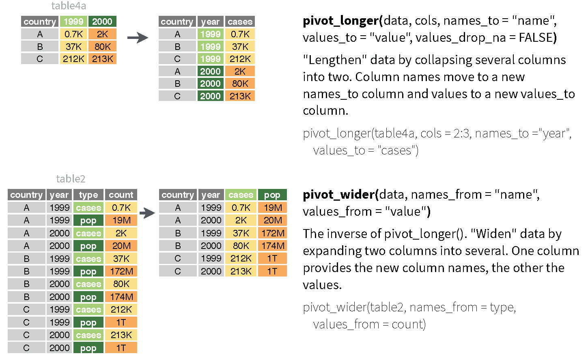

Topic 2 Reshaping Data
Learning Goals
- Understand the difference between wide and long data format and distinguish the case (unit of observation) for a given data set
- Develop comfort in using
pivot_widerandpivot_longerin thetidyrpackage
You can download a template .Rmd of this activity here.
Wide and Long Data Formats
Additional reading:
As we are transforming data, it is important to keep in mind what constitutes each case (row) of the data. For example, in the initial BabyNames data below, each case is a single name-sex-year combination. So if we have the same name and sex assigned at birth but a different year, that would be a different case.
| year | sex | name | count | prop |
|---|---|---|---|---|
| 1880 | F | Mary | 7065 | 0.0723836 |
| 1880 | F | Anna | 2604 | 0.0266790 |
| 1880 | F | Emma | 2003 | 0.0205215 |
| 1880 | F | Elizabeth | 1939 | 0.0198658 |
| 1880 | F | Minnie | 1746 | 0.0178884 |
| 1880 | F | Margaret | 1578 | 0.0161672 |
It is often necessary to rearrange your data in order to create visualizations, run statistical analysis, etc. We have already seen some ways to rearrange the data to change the unit of observation (also known as case). For example, what is the case after performing the following command?
BabyNamesTotal <- BabyNames %>%
group_by(name, sex) %>%
summarise(total = sum(count))Each case now represents one name-sex combination:
| name | sex | total |
|---|---|---|
| Aaban | M | 107 |
| Aabha | F | 35 |
| Aabid | M | 10 |
| Aabir | M | 5 |
| Aabriella | F | 32 |
| Aada | F | 5 |
In this activity, we are going to learn two new operations to reshape and reorganize the data: pivot_wider() and pivot_longer().
Wider
Example 2.1 We want to find the common names that are the most gender neutral (used roughly equally for males and females). How should we rearrange the data?
Well, one nice way would be to have a single row for each name, and then have separate variables for the number of times that name is used for males and females. Using these two columns, we can then compute a third column that gives the ratio between these two columns. That is, we’d like to transform the data into a wide format with each of the possible values of the sex variable becoming its own column. The operation we need to perform this transformation is pivot_wider(). It takes a values_from (total in this case) representing the variable to be divided into multiple new variables, and a names_from (the original variable sex in this case) that identifies the variable in the initial long format data whose values should become the names of the new variables in the wide format data. The entry values_fill = 0 specifies that if there are, e.g., no females named Aadam, we should include a zero in the corresponding entry of the wide format table. The names_sort = TRUE dictates that the variables are listed in alphabetical order; when it is FALSE, they are listed in order of first appearance.
BabyWide <- BabyNamesTotal %>%
pivot_wider(names_from = sex, values_from = total, values_fill = 0, names_sort = TRUE)| name | F | M |
|---|---|---|
| Aaban | 0 | 107 |
| Aabha | 35 | 0 |
| Aabid | 0 | 10 |
| Aabir | 0 | 5 |
| Aabriella | 32 | 0 |
| Aada | 5 | 0 |
Now we can choose common names with frequency greater than 25,000 for both males and females, and sort by the ratio to identify gender-neutral names.
Neutral <- BabyWide %>%
filter(M > 25000, F > 25000) %>%
mutate(ratio = pmin(M / F, F / M)) %>%
arrange(desc(ratio))| name | F | M | ratio |
|---|---|---|---|
| Kerry | 48534 | 49596 | 0.9785870 |
| Riley | 100881 | 92789 | 0.9197867 |
| Quinn | 28283 | 31230 | 0.9056356 |
| Jackie | 90604 | 78405 | 0.8653591 |
| Frankie | 33236 | 40552 | 0.8195897 |
| Jaime | 49673 | 67582 | 0.7350034 |
| Casey | 76020 | 110165 | 0.6900558 |
| Peyton | 69256 | 47682 | 0.6884891 |
| Pat | 40123 | 26731 | 0.6662264 |
| Jessie | 167010 | 110027 | 0.6588049 |
| Kendall | 58026 | 33821 | 0.5828594 |
| Jody | 55691 | 31206 | 0.5603419 |
Longer
Next, let’s filter these names to keep only those with a ratio of 0.5 or greater (no more than 2 to 1), and then switch back to long format. We can do this with the following pivot_longer() operation. It gathers the columns listed c(F,M) under the cols argument into a single column whose name is given by the names_to argument (“sex”), and includes the values in a column called total, which is the input to the values_to argument.
NeutralLong <- Neutral %>%
filter(ratio >= .5) %>%
pivot_longer(cols = c(`F`, `M`), names_to = "sex", values_to = "total") %>%
select(name, sex, total) %>%
arrange(name)| name | sex | total |
|---|---|---|
| Casey | F | 76020 |
| Casey | M | 110165 |
| Frankie | F | 33236 |
| Frankie | M | 40552 |
| Jackie | F | 90604 |
| Jackie | M | 78405 |
| Jaime | F | 49673 |
| Jaime | M | 67582 |
| Jessie | F | 167010 |
| Jessie | M | 110027 |
| Jody | F | 55691 |
| Jody | M | 31206 |
| Kendall | F | 58026 |
| Kendall | M | 33821 |
| Kerry | F | 48534 |
| Kerry | M | 49596 |
| Pat | F | 40123 |
| Pat | M | 26731 |
| Peyton | F | 69256 |
| Peyton | M | 47682 |
| Quinn | F | 28283 |
| Quinn | M | 31230 |
| Riley | F | 100881 |
| Riley | M | 92789 |
Reshaping Summary Graphic
Here is a nice summary graphic of pivot_longer and pivot_wider from the RStudio cheat sheet on tidy data:

Example: The Daily Show Guests
The data associated with this article is available in the fivethirtyeight package, and is loaded into Daily below. It includes a list of every guest to ever appear on Jon Stewart’s The Daily Show. Note that when multiple people appeared together, each person receives their own line.
Daily <- daily_show_guests| year | google_knowledge_occupation | show | group | raw_guest_list |
|---|---|---|---|---|
| 1999 | singer | 1999-07-26 | Musician | Donny Osmond |
| 1999 | actress | 1999-07-27 | Acting | Wendie Malick |
| 1999 | vocalist | 1999-07-28 | Musician | Vince Neil |
| 1999 | film actress | 1999-07-29 | Acting | Janeane Garofalo |
| 1999 | comedian | 1999-08-10 | Comedy | Dom Irrera |
| 1999 | actor | 1999-08-11 | Acting | Pierce Brosnan |
| 1999 | director | 1999-08-12 | Media | Eduardo Sanchez and Daniel Myrick |
| 1999 | film director | 1999-08-12 | Media | Eduardo Sanchez and Daniel Myrick |
| 1999 | american television personality | 1999-08-16 | Media | Carson Daly |
| 1999 | actress | 1999-08-17 | Acting | Molly Ringwald |
| 1999 | actress | 1999-08-18 | Acting | Sarah Jessica Parker |
Popular guests
Exercise 2.1 Create the following table containing 19 columns. The first column should have the ten guests with the highest number of total apperances on the show, listed in descending order of number of appearances. The next 17 columns should show the number of appearances of the corresponding guest in each year from 1999 to 2015 (one per column). The final column should show the total number of appearances for the corresponding guest over the entire duration of the show (these entries should be in decreasing order). Hint: the function rowSums() adds up all of the entries in each row of a table. Try using it in a mutate.
Recreating a graphic
The original data has 18 different entries for the group variable:
unique(Daily$group)## [1] "Acting" "Comedy" "Musician"
## [4] "Media" NA "Politician"
## [7] "Athletics" "Business" "Advocacy"
## [10] "Political Aide" "Misc" "Academic"
## [13] "Government" "media" "Clergy"
## [16] "Science" "Consultant" "Military"In order to help you recreate the first figure from the article, I have added a new variable with three broader groups: (i) entertainment; (ii) politics, business, and government, and (iii) commentators. The data is available here. We will learn in the next activity what the inner_join in this code chunk is doing.
DailyGroups <- read_csv("https://bcheggeseth.github.io/112_fall_2022/data/daily-group-assignment.csv")
Daily <- Daily %>%
inner_join(DailyGroups, by = c("group" = "group"))| year | google_knowledge_occupation | show | group | raw_guest_list | broad_group |
|---|---|---|---|---|---|
| 1999 | actor | 1999-01-11 | Acting | Michael J. Fox | Entertainment |
| 1999 | comedian | 1999-01-12 | Comedy | Sandra Bernhard | Entertainment |
| 1999 | television actress | 1999-01-13 | Acting | Tracey Ullman | Entertainment |
| 1999 | film actress | 1999-01-14 | Acting | Gillian Anderson | Entertainment |
| 1999 | actor | 1999-01-18 | Acting | David Alan Grier | Entertainment |
| 1999 | actor | 1999-01-19 | Acting | William Baldwin | Entertainment |
Exercise 2.2 Using the group assignments contained in the broad_group variable, recreate the graphic from the article, with three different lines showing the fraction of guests in each group over time. Hint: first think about what your case should be for the glyph-ready form.
More Exercises: Practice Pivoting Longer
A typical situation that requires a pivot_longer command is when the columns represent the possible values of a variable. Table 2.6 shows example data set from opendataforafrica.org with different years in different columns. You can find the data here.
Lesotho <- read_csv("https://bcheggeseth.github.io/112_fall_2022/data/Lesotho.csv")| Category | 2010 | 2011 | 2012 | 2013 | 2014 |
|---|---|---|---|---|---|
| Total Population | 2.01 | 2.03 | 2.05 | 2.07 | 2.10 |
| Gross Domestic Product | 2242.30 | 2560.99 | 2494.60 | 2267.96 | 1929.28 |
| Average Interest Rate on Loans | 11.22 | 10.43 | 10.12 | 9.92 | 10.34 |
| Inflation Rate | 3.60 | 4.98 | 6.10 | 5.03 | 4.94 |
| Average Interest Rate on Deposits | 3.68 | 2.69 | 2.85 | 2.85 | 2.72 |
Exercise 2.3 (Practice pivoting longer) Make a side-by-side bar chart with the year on the horizontal axis, and three side-by-side vertical columns for average interest rate on deposits, average interest rate on loans, and inflation rate for each year. In order to get the data into glyph-ready form, you’ll need to use pivot_longer. Hint: pivot_longer uses the dplyr::select() notation, so you can, e.g., list the columns you want to select, use colon notation, or use starts_with(a string). See Wickham and Grolemund for more information.